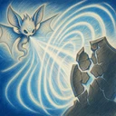

Jeritan Memekakkan
Menyerang area kerucut ke arah target saat ini, sepanjang 2 petak dan melebar 60° ke kiri dan ke kanan dari garis tengahnya. Memberikan kerusakan fisik sebesar 500% Daya Skill kepada musuh di area itu dan menurunkan Pertahanan mereka sebesar 15 selama 2 detik. Ketahanan Sihir tidak berkurang.